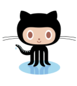

Interface 1

Grunt plugin
Install the grunt-surge plugin, and your project is ready to use grunt deploy
Gulp plugin
Install surge as a devDependency, and you-re ready to use it in your Gulpfile

Git Hooks
Deploy every time you push to Github, but without any branch juggling

npm run scripts
Install the Surge CLI tool, and your project is ready to use in your